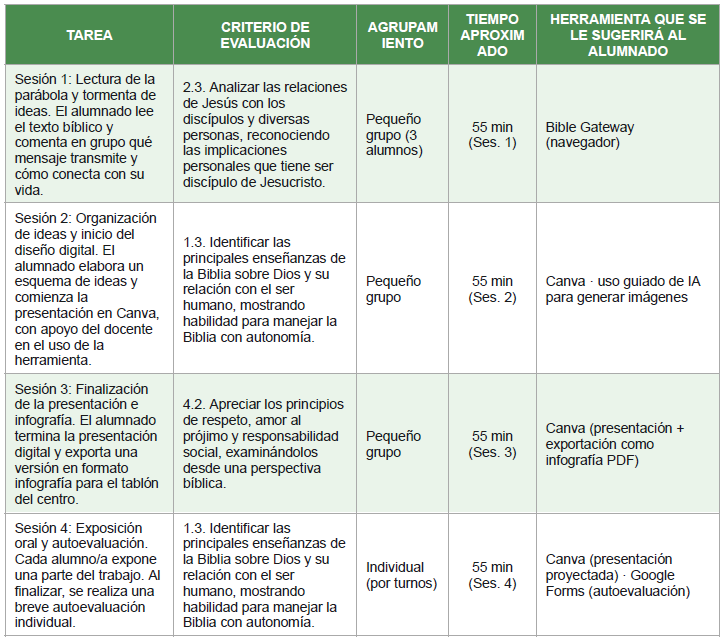

Tareas y Criterios
BLOQUE 1 · Introducción
Esta guía didáctica está pensada para facilitar la aplicación de la Situación de Aprendizaje «¿Qué nos enseña Jesús hoy?» a cualquier docente de Religión Evangélica en 2.º de ESO. Recoge la relación entre las tareas del proyecto y los criterios de evaluación del currículo oficial (LOMLOE), así como recomendaciones prácticas extraídas de la experiencia en el aula.
BLOQUE 2 · Tabla de tareas y criterios

BLOQUE 3 · Observaciones y recomendaciones para otros docentes
Observaciones y recomendaciones para otros docentes
BLOQUE 3 · Observaciones y recomendaciones para otros docentes:
Recomendaciones para la aplicación en el aula
Sobre el grupo y los tiempos Esta SdA ha sido diseñada para un grupo muy reducido (3 alumnos), lo que permite un seguimiento cercano y una atención muy individualizada. Si se aplica a un grupo más numeroso, se recomienda ampliar la temporalización a 6 sesiones y distribuir los roles de trabajo cooperativo con más detalle (coordinador, diseñador, redactor, portavoz).
Sobre las herramientas digitales Antes de la Sesión 1 conviene verificar que todos los dispositivos tienen acceso a Canva, Bible Gateway y MindMeister desde el navegador del centro, sin necesidad de instalación. Se recomienda dedicar los primeros 10 minutos de la Sesión 2 a repasar las funciones básicas de Canva (atajos de teclado, duplicar diapositivas, exportar) para evitar interrupciones durante el trabajo creativo.
Sobre el uso de la IA en Canva El uso guiado de la función de inteligencia artificial de Canva para generar imágenes es uno de los momentos más motivadores de la SdA. Para aprovecharlo bien, se sugiere trabajar previamente con el alumnado qué es un prompt y cómo redactarlo con detalle. Una buena práctica es hacer un ejemplo colectivo en la pizarra antes de que cada grupo redacte el suyo de forma autónoma.
Sobre la evaluación Se recomienda compartir la rúbrica con el alumnado desde la Sesión 1 para que conozcan los criterios desde el inicio y puedan autorregular su proceso. La diana de autoevaluación (Sesión 4) funciona mejor si se garantiza el anonimato mediante Google Forms, lo que reduce el sesgo de respuesta por cortesía.
Sobre la diversidad y el DUA Al tratarse de una materia de libre elección, es habitual que coincidan en el aula alumnos con niveles de competencia digital muy distintos. Para atender esa diversidad se sugiere ofrecer dos opciones de soporte: una guía paso a paso impresa para quienes tengan más dificultades con las herramientas, y libertad creativa ampliada en el diseño para quienes terminen antes. El trabajo en grupo pequeño ya facilita de por sí la ayuda entre iguales.
Sobre los derechos de autor Es importante recordar al alumnado antes de la Sesión 2 que todas las imágenes que incluyan en su presentación deben tener licencia libre (Pixabay, Unsplash, Wikimedia Commons) y que deben citar la fuente al pie de cada imagen. Este momento es una oportunidad para reforzar la infografía de seguridad digital trabajada al inicio de la SdA.
Conexión con otras materias Aunque esta SdA pertenece a Religión Evangélica, sus competencias digitales (uso de Canva, búsqueda en internet, exposición oral con soporte visual) son transferibles a cualquier materia. Se puede plantear como punto de partida para una coordinación con el área de Lengua Castellana (exposición oral) o con Tecnología e Informática (uso responsable de la IA).